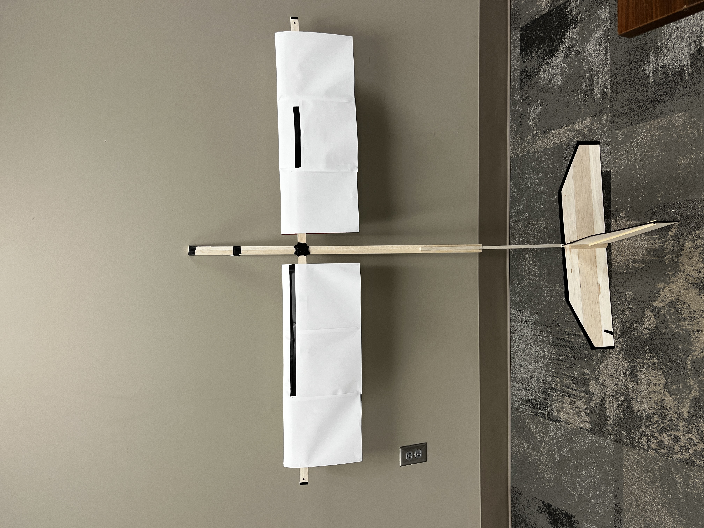
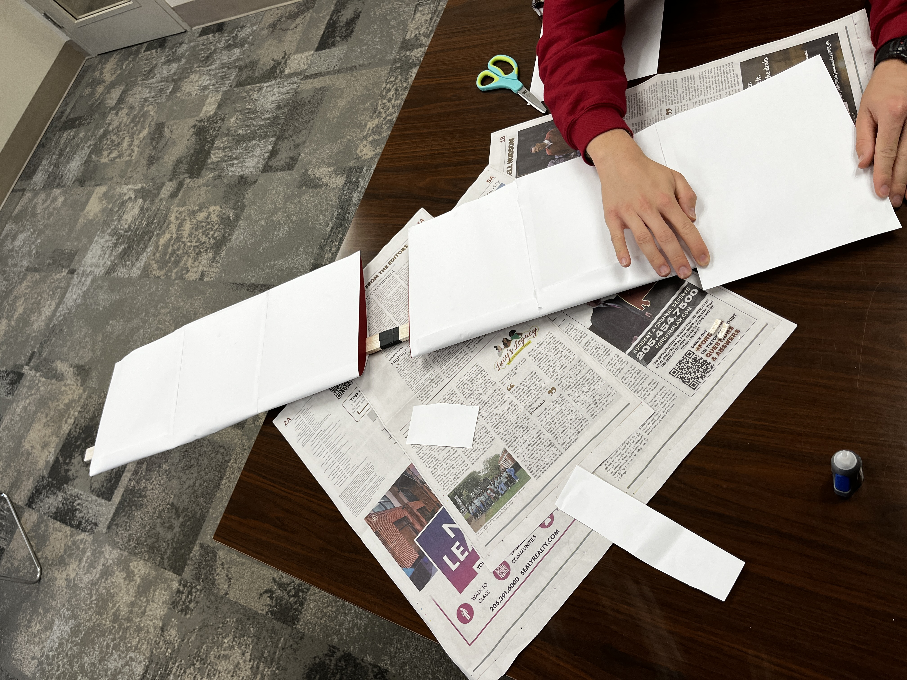
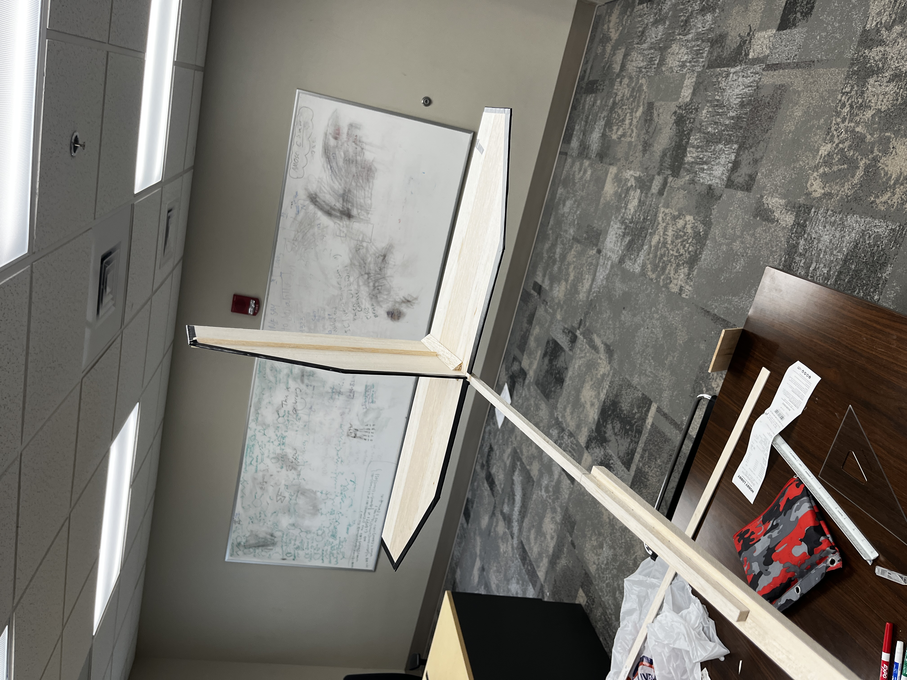

About Me
I am Lake Larson, an Eagle Scout and Senior in Aerospace Engineering at The University of Alabama. Roll Tide! I am actively seeking an internship for the summer of 2025. My passions lie in materials science and computer simulations (CFD), and I have hands-on experience in both areas, as highlighted below. I am an active member of my school's Formula SAE chapter, where I spend most of my free time designing and manufacturing the next year's car. Please feel free to explore my website, and don't hesitate to reach out if you have any questions!
Professional Experience
Flight Test Structures and Dynamics Intern: Lockheed Martin RMS (Sikorsky)
Currently an intern for Sikorsky's flight test facility in Jupiter, FL, where I assist in processing and analyzing flight test data to extract key performance metrics.
Thermo Structural Systems Co-op: Kratos Defense & Security Solutions (May 2024 - May 2025)
I design, conduct, monitor, and troubleshoot hundreds of material property tests to meet customers’ data requirements, ensuring precise results that meet high industry standards and align with client expectations. During my first term, my large project was collaborating on the pioneering of crack propagation studies at Kratos by designing specialized test fixtures and developing a data interpreter. This provided engineers with accurate results and tools to improve future tests. With all of these projects, I had to draft technical drawings that accommodated the customer’s desired test samples within the provided materials, enabling efficient fabrication by the internal machine shop, ensuring on-time project completion. In my second term, I supported the standardization and organization of test samples and their associated hardware by surveying shop technicians and engineers to ensure optimal specimens were selected. Additionally, I played a key role in the development of an internal IRAD product that cut test setup time by 50%, overseeing the entire process—from communicating with technicians and drafting technical drawings to coordinating machining and managing final assembly.
Aerodynamics Assistant Lead Engineer: Formula SAE (Crimson Racing) (August 2022 - Present)
I am currently in the school's FSAE chapter, where I served as the Aerodynamics Assistant Lead and the Senior Engineer for the Rear Wing of our CR25 car, which is highlighted in the projects section. Previously, I held the position of Side Aero Senior Engineer for our CR22B car.
Through my experiences in FSAE, I have developed valuable communication skills while collaborating with a team of engineers. I have learned the importance of compromise to achieve our design goals, ensuring that all components work seamlessly together. Additionally, I have been involved in the manufacture of over 20 carbon fiber parts, overseeing the process from mold design to the final product.
One of the most rewarding aspects of my role is the opportunity to help mentor and support the next generation of engineers.
Residential Advisor: University of Alabama Housing & Residential Communities (August 2023 - December 2024)
I serve as a residential advisor to 40 freshmen this year and served 40 the year previous. I organized, planned, and ran 9 community-building events, including an ice cream social, dodgeball tournament, and game nights. I also connected with residents and worked to build a sense of community that allowed them to adjust to college in a healthy manner.
Photographer: The University of Alabama Recreation Marketing Department (August 2023 - December 2024)
Key Projects
CR25 Rear Wing Design
Increased the efficiency of the rear wing by 11% and decreased the weight by almost 1.5 lbs. This was done by doing iterative design using CFD and SolidWorks to help reduce the pressure gradient and therefore reduce the vortices coming off the endplate. This helped reduce the induced drag and therefore increased efficiency.

Velocity streamlines off the Rear Wing.

Vortex magnitude coming off the Rear Wing.

Pressure gradient used to determine Rear Wing trim.
CR22 Side Aero Design
Did the first iterations of side aero for Crimson Racing. Through this, I was introduced to CFD and SolidWorks and how to use them for iterative design. This design laid the groundwork for later side aero engineers.
Glider Project
Freshman year I made a model glider based on set parameters in my Intro to Engineering class. The glider successfully carried 24 quarters 40.3 feet. This project was my first introduction to a real engineering problem and was when I knew this is what I wanted to do with my life. The wing construction is something worth highlighting—it was constructed using 3D-printed ribs that were designed by importing an airfoil from Airfoil Tools into SolidWorks, and a slot was added for the spar. They were then 3D printed, mounted to a balsa wood spar, and covered in a paper skin to save weight.

Overhead image of the glider

Wing of the glider.

Tail of the glider.
Python Dive Calculator
Made a scuba dive calculator for my final project in my Intro to Python coding class. It takes various inputs such as air tank pressure and desired depth and calculates if and how long you can explore at said depth while still having enough air to surface safely.
Dive Calculator
Flag Deposit Box
Planned, got materials donated, and managed the troop while designating tasks for my Eagle Scout project. I also had to get the placement of the box approved by the church committee. This flag box is still in use today and has about 30 flags deposited a month that are properly retired.

Front of flag deposit box

Back of flag deposit box